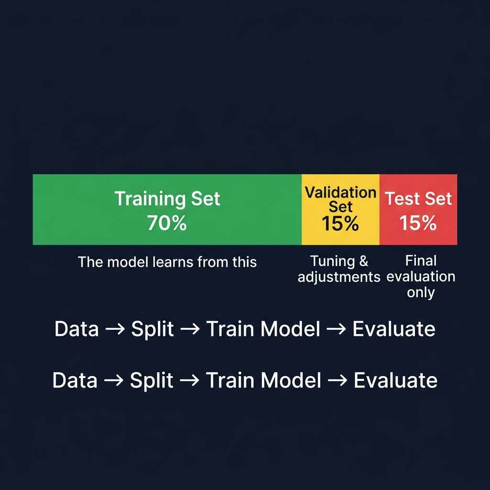

البيانات والداتاسيت Datasets & Data Preparation
البيانات Data هي الوقود الذي يعمل عليه الذكاء الاصطناعي. بدون بيانات جيدة، لا يمكن بناء نموذج جيد — مهما كانت الخوارزمية ذكية.
١. ما هي الداتاسيت؟ What is a Dataset?
الداتاسيت هي مجموعة منظمة من البيانات Organized Collection of Data تُستخدم لتدريب Training واختبار Testing نموذج الذكاء الاصطناعي.
مثال: داتاسيت ImageNet تحتوي على 14 مليون صورة مصنفة في 20,000 فئة — وهي من أشهر الداتاسيت في العالم وتُستخدم لتدريب نماذج التصنيف. أما داتاسيت COCO فتحتوي على 330,000 صورة مع توصيف لكشف الأجسام Object Detection.
٢. أنواع البيانات Types of Data
🖼️ بيانات الصور Image Data
صور بصيغ مثل JPG, PNG, BMP. تُستخدم في تصنيف الصور Classification وكشف الأجسام Detection والتقسيم Segmentation.
صور الأشعة الطبية لتشخيص الأمراض، صور الأقمار الصناعية لتحليل الأراضي، صور كاميرات المراقبة للأمن.
📝 بيانات نصية Text Data / NLP Data
نصوص مثل مقالات، تعليقات، محادثات. تُستخدم في تحليل المشاعر Sentiment Analysis والترجمة Translation.
تعليقات أمازون لتحديد "إيجابي/سلبي"، رسائل بريد لتصنيفها "سبام/عادي".
🔢 بيانات جدولية Tabular / Structured Data
جداول مثل Excel بأعمدة وصفوف. تُستخدم في التنبؤ Prediction والانحدار Regression.
بيانات أسعار المنازل (مساحة، موقع، عدد غرف) للتنبؤ بالسعر.
🎵 بيانات صوتية ومرئية Audio & Video Data
ملفات صوت WAV, MP3 وفيديو MP4. تُستخدم في التعرف على الكلام Speech Recognition.
Siri يحول كلامك لنص، YouTube يولّد ترجمة تلقائية للفيديوهات.
٣. التوصيف / التسمية Data Annotation / Labeling
التوصيف هو عملية وضع علامات Labels على البيانات لتعليم النموذج "الإجابة الصحيحة" Ground Truth. بدون توصيف، النموذج لا يعرف ماذا يتعلم!
أنواع التوصيف للصور Image Annotation Types:
الصورة كلها = تسمية واحدة.
مثال: "قطة" أو "كلب"
مستطيل حول كل كائن مع اسمه.
الأكثر استخداماً في كشف الأجسام.
تحديد كل بكسل ينتمي لأي كائن.
الأدق لكن الأصعب.
مثال عملي: في مشروع كشف الحيوانات، تفتح صورة غابة ← ترسم مربعاً حول كل حيوان ← تكتب اسمه (أسد، فيل، زرافة). هذا الملف المُوصَّف Annotated File يصبح "الإجابة الصحيحة" التي يتعلم منها النموذج.
٤. تقسيم البيانات Data Splitting (Train / Validation / Test)
لا يمكنك استخدام نفس البيانات للتدريب والاختبار — مثل الطالب الذي يحفظ أسئلة الامتحان مسبقاً: درجته عالية لكنه لا يفهم فعلاً. لذلك نقسم البيانات لـ ثلاث مجموعات Three Splits:

📊 مخطط توضيحي — تقسيم البيانات إلى ثلاث مجموعات Train / Validation / Test Split
مجموعة التدريب Training Set
يتعلم منها النموذج Model الأنماط Patterns.
مثل الكتاب المدرسي — يذاكر منه الطالب ويتعلم.
مجموعة التحقق Validation Set
يُختبر أثناء التدريب لمراقبة الأداء Monitor Performance.
مثل الواجبات المنزلية — يحل ويراجع نفسه.
مجموعة الاختبار Test Set
اختبار نهائي بعد انتهاء التدريب تماماً.
مثل الاختبار النهائي — لم يره من قبل أبداً.
قاعدة ذهبية Golden Rule: بيانات الاختبار Test Set لا يراها النموذج أبداً أثناء التدريب. إذا رآها، فالنتائج مزيفة — وهذا يسمى Data Leakage (تسريب البيانات)!
٥. تحليل البيانات الاستكشافي Exploratory Data Analysis — EDA
قبل التدريب، يجب أن تفحص بياناتك جيداً Inspect Your Data. تحليل البيانات يكشف المشاكل مبكراً قبل أن تضيع وقت التدريب.
أسئلة أساسية عن بياناتك Key Questions:
✅ كم حجم الداتاسيت Dataset Size؟ — هل العدد كافٍ للتدريب؟ (عادة 1,000+ صورة كحد أدنى)
✅ هل الفئات متوازنة Class Balance؟ — هل كل فئة لها عدد صور متقارب؟
✅ ما جودة البيانات Data Quality؟ — هل فيها صور ضبابية أو تالفة أو مكررة؟
✅ هل التوصيف صحيح Label Accuracy؟ — هل المربعات مرسومة بدقة على الكائنات؟
✅ ما تنوع البيانات Data Diversity؟ — هل تغطي ظروف مختلفة (إضاءة، زوايا، خلفيات)؟
٦. ملف إعداد البيانات Dataset Configuration File — data.yaml
في نماذج YOLO، هذا الملف يخبر النموذج أين توجد البيانات Data Paths وما هي الفئات Class Names.
train: ../train/images
val: ../valid/images
test: ../test/images
# عدد الفئات Number of Classes
nc: 3
# أسماء الفئات Class Names
names: ['cat', 'dog', 'bird']
ملاحظة: nc = عدد الفئات Number of Classes. يجب أن يتطابق مع عدد الأسماء في names.